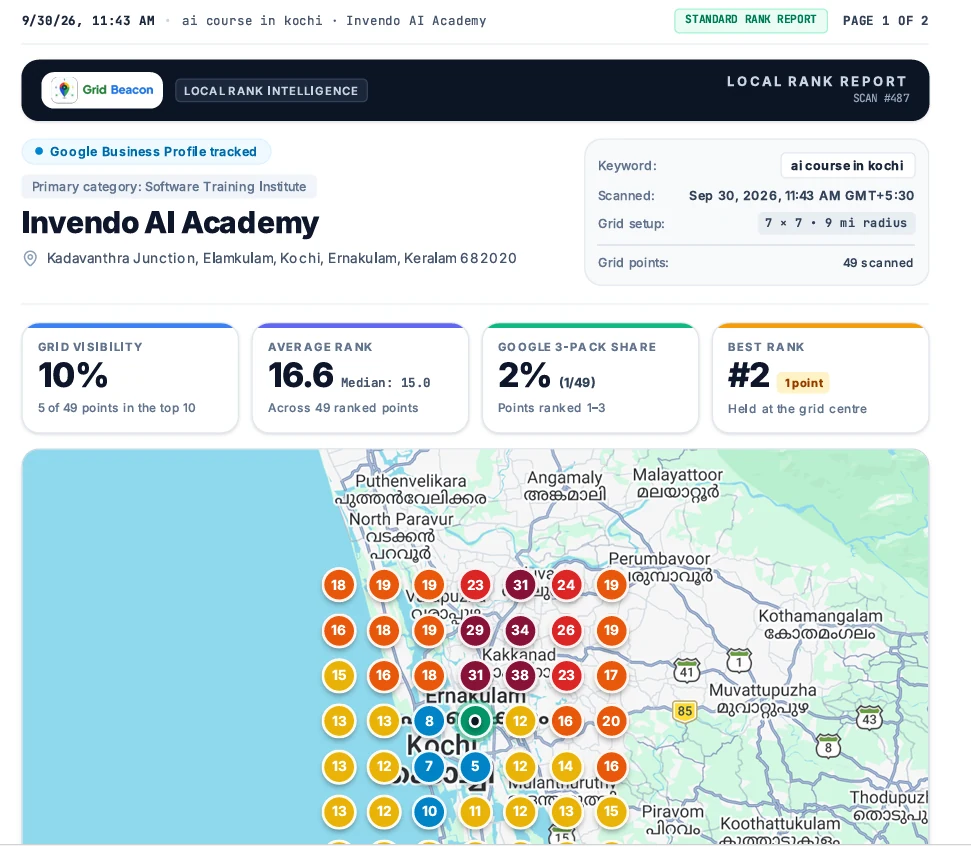

PROJECT 01 / DIGITAL MARKETING / SEO / AEO / GEO
Building visibility from the outside in.
Practical search optimization work at Invendo AI Academy, with off-page SEO as a key focus.

ABOUT THE WORK / 01
From idea to implementation.
Support website and local search optimization activities to improve discoverability for AI training and software education topics. The supplied resume describes practical learning and implementation, with off-page SEO as the primary area of focus from the earlier portfolio brief.
Key features & contributions
- Keyword research and on-page elements including page titles, meta descriptions, service content, and internal content planning.
- Google Business Profile updates: service details, posts, photos, review monitoring, and relevant review replies.
- Tracking GBP activity such as review counts, responses, posts, and profile insights for ongoing reporting.
- Applying AEO and GEO principles to create clear, useful content for user questions and AI-powered search experiences.
- Reviewing competitor visibility and website SEO signals to identify improvement opportunities.
- Off-page SEO as a key focus, alongside broader SEO and local-search practice.
TECHNOLOGIES / TOOLS
Off-Page SEOOn-Page SEOLocal SEOKeyword ResearchGoogle Business ProfileAEOGEOSearch ConsoleGA4AhrefsSEMrushUbersuggestKeyword Planner
DIGITAL MARKETING
EVIDENCE / SOURCE ACCURACY
Real work. Clear context.
The screenshot is included as evidence from the portfolio document. No unsupported ranking, traffic, backlink, or conversion claim is made here. Add a redacted campaign report or before/after metrics only when you have permission and verified data.